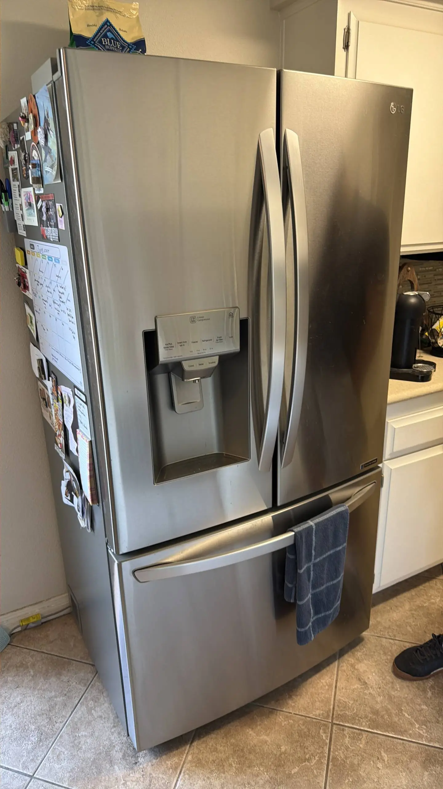

LG Refrigerator Ice Maker Is Leaking Water — Possible Water Valve or Ice Maker Assembly Failure
An LG refrigerator ice maker that is leaking water should be inspected promptly. Water around the ice maker can come from several sources, including a defective water inlet valve, a damaged ice maker assembly, a blocked fill tube, excessive ice buildup, or a problem with the refrigerator's water supply line. Even a small leak can eventually damage shelves, flooring, insulation, and electrical components. Finding the location and timing of the leak is the first step toward identifying the cause. Some leaks occur only when the ice maker fills with water, while others develop gradually as ice melts or water continues entering the ice maker when it should not.
The most obvious sign is water collecting underneath or around the ice maker. You may also find water inside the ice bin, frozen water on the bottom of the freezer compartment, or puddles beneath the refrigerator. In some cases, the ice cubes may appear unusually large, connected together, or partially frozen into a solid mass. This can happen when too much water enters the ice maker during a fill cycle. Another warning sign is that the ice maker stops producing ice correctly. If water leaks instead of filling the mold properly, the ice maker may produce fewer cubes or stop harvesting altogether. Pay attention to when the leak occurs. If water appears immediately after the ice maker starts a fill cycle, the water inlet system or fill tube should be inspected. If water appears after ice melts, the problem may involve the ice maker assembly or drainage.
The water inlet valve controls the flow of water into the refrigerator and ice maker. When the ice maker requests water, the valve opens for a specific amount of time and then closes. A failing valve may not close completely. If it allows water to pass when it should be closed, the ice maker can receive excess water. This may cause overflowing, unusually large ice cubes, or water leaking into the freezer. A valve can also develop an internal failure that causes inconsistent water pressure or insufficient water delivery. Mineral deposits and normal wear can affect its operation over time. If the water valve is defective, replacing it is generally more reliable than attempting to repair the internal mechanism. A technician can test the valve and verify whether it is receiving the correct electrical signal from the refrigerator before replacement.

The ice maker assembly itself can also be the source of the leak. It contains several components responsible for filling, freezing, harvesting, and dispensing ice. A cracked ice mold or damaged housing can allow water to escape before it freezes. Internal mechanical problems can also cause the ice maker to remain in an incorrect position during the fill cycle. If the leak appears to originate directly from the ice maker rather than the water connection, the assembly should be inspected for cracks, loose components, or signs of physical damage. Depending on the LG refrigerator model and the specific failure, replacing the complete ice maker assembly may be more practical than replacing individual internal components.
The fill tube should also be checked. This tube directs water from the inlet valve into the ice maker, and a partial blockage caused by ice can prevent water from entering the mold correctly. A frozen fill tube can cause water to back up or spray in an unintended direction. When the ice maker attempts to fill, water may escape around the assembly and freeze inside the freezer compartment. A blockage can develop because of a valve problem, low water flow, temperature issues, or water entering the tube incorrectly. Simply removing visible ice may provide temporary relief without solving the underlying cause, so the water valve and fill tube should be inspected together when this type of leak occurs.
Not every leak around an ice maker originates from the ice maker itself. The refrigerator's external water supply line, tubing, fittings, and connections can also leak. A loose connection may allow water to drip into the area behind or underneath the refrigerator. Water can then travel along the cabinet and make it appear that the ice maker is responsible. Inspect visible tubing and connections for moisture, cracks, kinks, or mineral deposits. If the leak is coming from a pressurized connection, shut off the refrigerator's water supply before attempting any repair.
An ice maker should receive a controlled amount of water during each fill cycle. If the system delivers too much water, the mold can overflow. Overfilling may be caused by a defective water inlet valve, an ice maker control problem, incorrect water pressure, or a malfunction within the ice maker assembly. Large or misshapen ice cubes can provide an important clue.
If the cubes are unusually large and water is appearing around the ice maker, the fill system should be checked rather than assuming the leak is caused by a simple spill. You can safely begin by removing loose ice and wiping up standing water. Check whether food packages or ice are obstructing the ice maker, and inspect visible tubing and connections for obvious leaks. Avoid forcing frozen components or using sharp objects to remove ice from the fill tube because this can damage tubing or other components and create a more serious leak. If water continues entering the ice maker when it should not, turn off the refrigerator's water supply until the appliance can be inspected.
Professional service is recommended when the source of the leak is unclear, the water inlet valve appears defective, or the ice maker assembly is malfunctioning. A technician can test the water valve, inspect the fill tube, check water pressure, examine the ice maker assembly, and determine whether the refrigerator is sending the correct signal to the valve. Prompt repair can prevent repeated water exposure and additional freezer damage. It can also restore normal ice production and prevent the refrigerator from wasting water.
An LG refrigerator ice maker leaking water can result from a defective water inlet valve, damaged ice maker assembly, frozen fill tube, excessive water flow, or a leaking supply connection. Identifying exactly where and when the water appears is essential for accurate diagnosis. If cleaning and basic inspection do not resolve the leak, professional appliance repair is the safest approach. A qualified technician can identify the failed component and restore the ice maker before a minor water leak turns into a larger refrigerator repair problem.